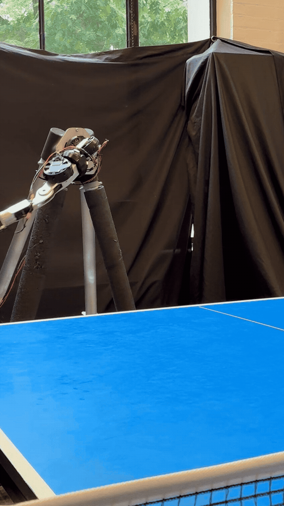
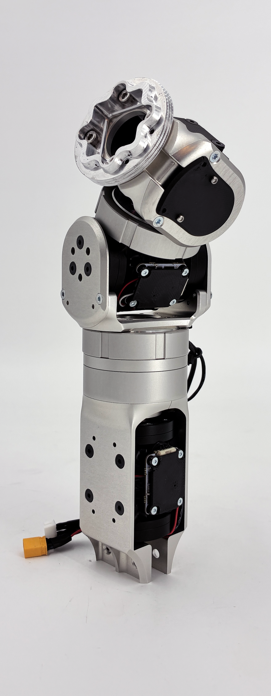
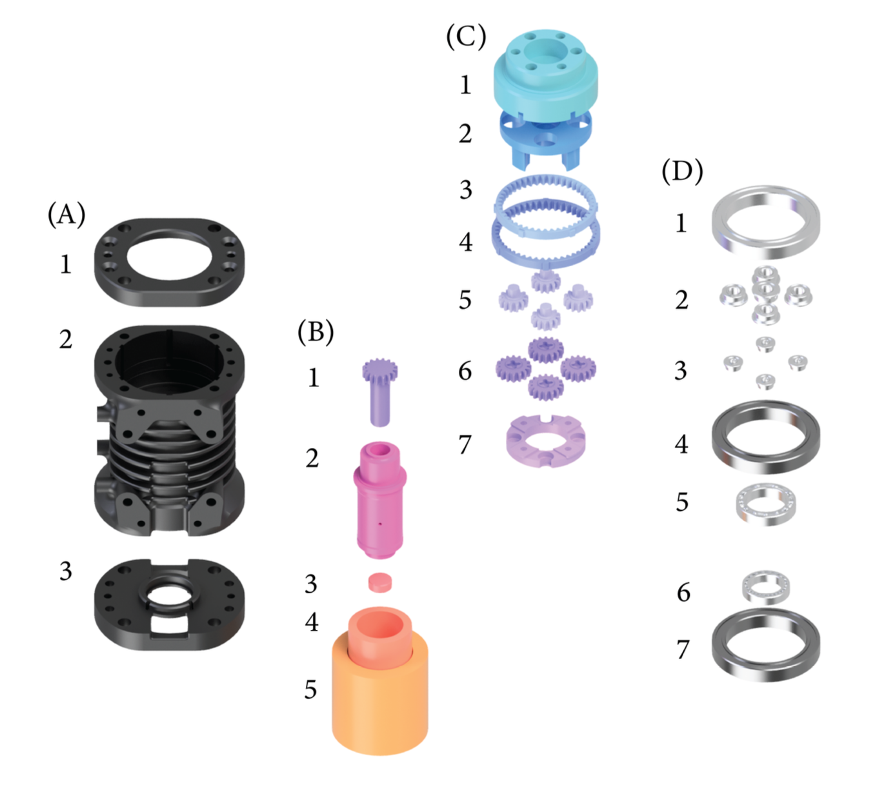
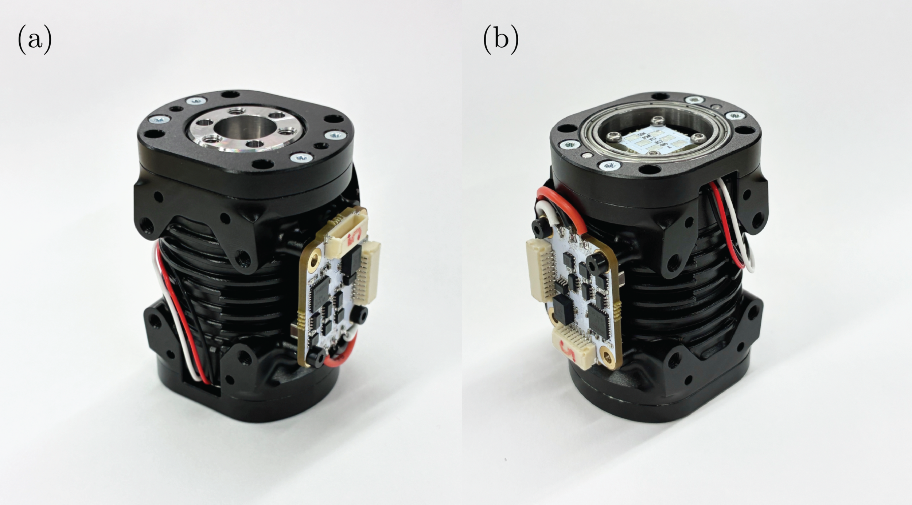
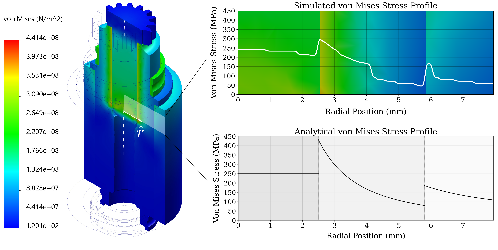
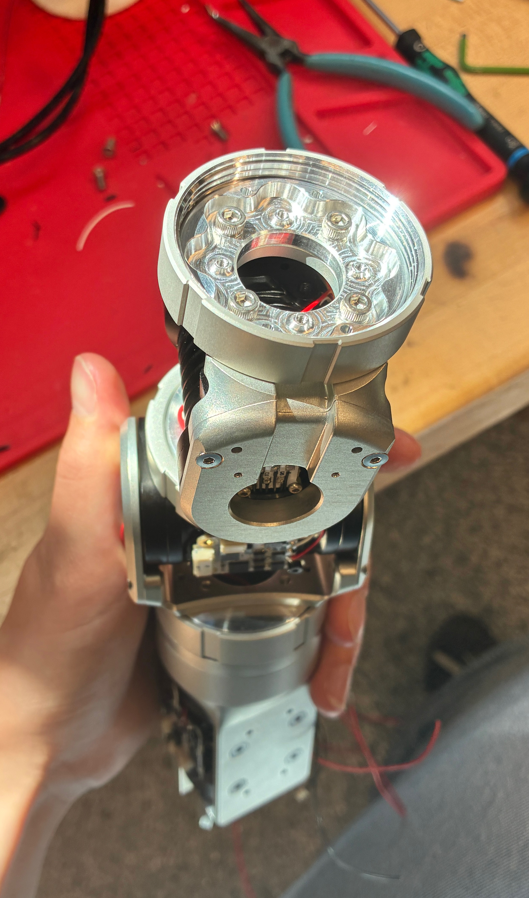
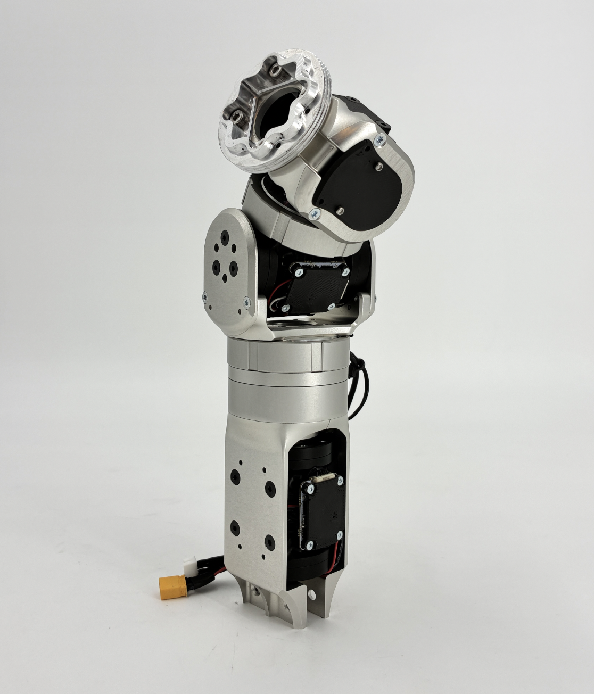
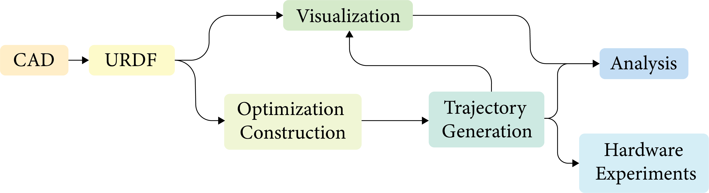
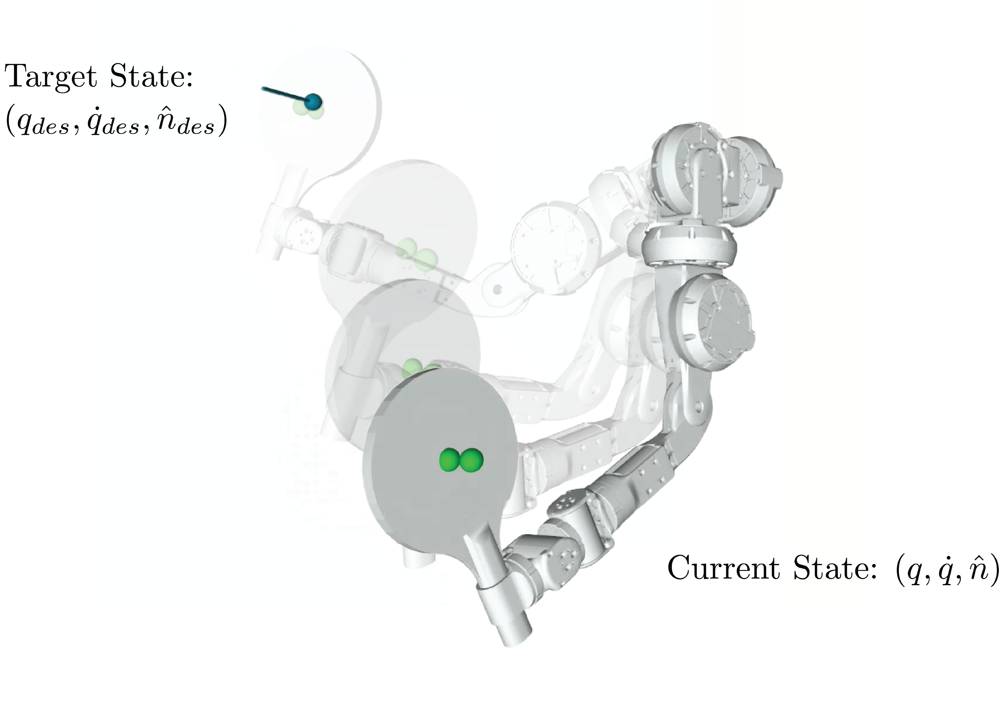

Modular Torque-Dense Wrist Assembly
Undergraduate thesis in the MIT Biomimetic Robotics Lab, advised by Prof. Sangbae Kim.


Overview
In this project, I designed a 3 degree of freedom (DOF) wrist for a bio-inspired robotic arm using
a streamlined co-design approach, in which optimization results actively inform hardware design choices. Central hardware elements designed include a custom motor module
used for all joints in the
wrist, and a modular wrist assembly that emphasizes range of motion, reconfigurability, and
structural stability under high loads.
In conjunction with hardware design, I developed new control strategies to test how the
wrist can be used most effectively; both as an active actuator and as a passive element that
leverages momentum transfer. System performance was tested and quantified as an addition to the
MIT Biomimetic Robotics Lab’s robotic table tennis system, in which the wrist (previously
limited to a single degree of freedom) must precisely position and orient a paddle to return
balls with a desired spin, velocity, and landing position during gameplay.
You can read my full undergraduate thesis on this project
here.
Motor Module Design
Former work in the lab has yielded a range of custom actuators with
strong performance, including one actuator featuring a compound planetary gearbox with a small size and
substantial torque amplification designed by Nick Cerone. While the existing
gearbox design is well suited to this application, the spur gear transmission (a feature resulting
from the separation and parallel mounting of the motor and gearbox) is not geometrically
compatible with a wrist. To maintain the torque density provided by Nick's gearbox, I designed a new
module for this project to mount both the gearbox and motor within one
compact housing.
The size of frameless BLDC motor used in this module was a critically important early decision, with a
trade-off between sufficient torque output, sufficient speed, and minimal mass governing its
selection. To explore this trade-off with greater depth
and precision than reasonably possible with analytical calculations by hand, preliminary
trajectory optimizations were run with multiple motor candidates.
Briefly put, they showed the Mosrac U2523 motor to be most suitable, though details on these simulations
can be found in my thesis.


Components within the module are grouped by subassembly and assigned labels in the image to the left. The existing compound
planetary gearbox (subassembly C) is contained in the upper half of the housing (subassembly
A), and connected through the shaft of a new extended sun gear (B1) to a rotary adapter
(B2), which is mounted in turn to the inner surface of the rotor (B4).
The stator of the motor (B5) is contained in the lower half of the housing, and the encoder for the motor is mounted
to the lower surface of the housing bottom (A3). A magnet for the encoder (B3) is mounted
within the rotary shaft, along the axis of the sun gear. Cutouts in the housing bottom (A3) allow for wires internal to the
module (both from the motor itself and from its encoder board) to be passed through the
housing, routed between the heat dissipation fins, and connected to the driver board at its
mounting location.
An assembled motor module after manufacturing is shown below in Fig. 3, including the driver
and encoder boards (not rendered in Fig. 2).


Additionally, a shrink fit version of the sun gear and rotary shaft was manufactured to maximize concentricity and rotational stiffness in the module. The behavior of this shrink fit under a range of conditions was analyzed to ensure its viability, including (1) the sun gear, rotary shaft, and rotor at room temperature after assembly, (2) the sun gear, rotary shaft, and rotor under approximately uniform heating by the motor during high power operation, and (3) the sun gear and rotary shaft under the maximum reasonable temperature difference ∆T imposed to enable assembly. This analysis is discussed in detail in Section 2.4 of my thesis. Analytical solutions were verified against simulation results as shown in Fig. 4.
Wrist Assembly Design

Above: Fig. 5 - Exploded view of the wrist assembly, with components visually grouped by the degree of freedom that they govern.
Right: Fig. 6: Overview of the wrist assembly described in this work. Note that the pitch and yaw degrees of freedom for this design are not necessarily determinate, since the position of the roll joint dictates which of the subsequent two joints governs each of these conventional rotations.

Incorporating the custom motor modules described above, I designed a compact, torque-dense 3 DOF wrist assembly. A serial configuration of joints, rather than a parallel or spherical one, is used for easier modularity, simpler kinematics, and better future compatibility with reinforcement learning as a potential technique for control.
The constraints and design priorities governing components of this assembly are discussed
in further detail in Chapter 3 of my thesis. Throughout the assembly, widely compatible mounting and integration components are
designed to be patterned multiple times to bring down manufacturing cost and complexity. A total of just 9 unique machined part designs make up
all 19 structural parts in the assembly (excluding non-critical auxiliary parts, such as PCB covers).
The interchangeable output of the wrist is connected through a torque transfer coupling,
allowing for the rapid swapping of different end effectors
during wrist use. Each coupling comprises two halves with an
internal torque-transfer profile, and a threaded ring to handle axial loads. Each degree of freedom in the assembly is separated by such a coupling,
allowing users to easily add, remove, and reconfigure (for example, rotate in 90-degree increments) joints in the wrist, even during active use
of the system.


Simulation & Trajectory Optimization
One application of this wrist module is the exploration of the roles played by the
wrist in arm trajectories. Before beginning hardware testing, I conducted a series of simulation
experiments in MuJoCo analyzing how multiple factors in the use of the wrist affect the performance of the arm.
Firstly, the degree of passivity of the wrist, modeled by a variable torque limit imposed
on the wrist motors (with 0 allowable torque output representing an entirely passive wrist,
and unchanged torque output representing an entirely active wrist).
Secondly, the extent of wrist utilization in the trajectory, modeled by a variable weight
multiplier on position, velocity, and acceleration costs for the wrist joints independent of the
rest of the arm. An extremely large maximum weight multiplier results in complete kinematic
exclusion of the wrist from the trajectory (wrist "locking"), a multiplier of one representing
typical use, and a minimum multiplier close to zero resulting in amplified wrist use relative
to other joints in the arm.
For the sake of brevity I will not include the optimization formulations or resulting plots here, though they can be
found in Chapter 4 of my thesis. However, all sweeps revealed notable results
regarding the energy expenditure of the arm throughout the trajectories, and the passivity
sweep showed a clear trend of increasing wrist activity accelerating the rate of error reduction
relative to the target state during trajectories.


Hardware Results
Full videos and details of the wrist's performance in the lab's robotic table tennis system will be displayed after official publication of the project. Please feel free to reach out with questions in the meantime.
Acknowledgements
A special thanks to Professor Sangbae Kim for supervising this thesis, and to David Nguyen for his mentorship throughout the project! Thank you as well to Professor Rohan Abeyaratne for providing valuable reviews of some of the mechanical calculations pursued in this thesis, as well as to Dr. Nicholas Ignacio for his experimental advising and support.